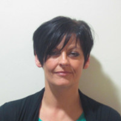

Meet the team
From the start of the Transformation Through Technology programme through to the end, maximum involvement and planning from clinical and other front line staff is essential to ensure the systems support our new ways of working. The following roles and groups are now in place to ensure this happens.
Chief Clinical Information Officers (CCIOs)
The Programme is supported by two Chief Clinical Information Officers (CCIOs).
-
Karen Selby
Consultant, Obstetrics, Gynaecology and Neonatology -
Rhona Maclean
Consultant Haematologist
Nursing and Midwifery Clinical Information Officers (NMCIO)
The Transformation through Technology programme is supported by a Nursing and Midwifery Clinical Information Officer and a Deputy Nursing and Midwifery Clinical Information Officer
-
Lisa Locker
Nursing and Midwifery Clinical Information Officer -

Lisa Leach
Deputy Nursing and Midwifery Clinical Information Officer
Chief Operational Change Lead
Eight Operational Change Managers will lead the programme within each of the eight Care Groups. They are managed by the appointment of a new Chief Operational Change Lead.
-
Lisa Needham
Chief Operational Change Lead
Lisa formally worked as a general manager, special projects at STH. She worked most recently on surgical flow and theatre productivity.
Operational Change Managers
-
Anne Hilton
Specialised Cancer, Medicine and Rehabilitation -
Ayesha Heaton
Combined Community and Acute -
Gilian Piper
Head & Neck -
Lance Burn
Emergency Care -
Lorraine Rogers
South Yorkshire Regional Services -
Louise Jepson
LEGION -
Nazreen Iqbal
Surgical Services -
Jon Wrend
Operating Services, Critical Care and Anaesthesia (OSCCA)
Clinical leads
We're pleased to have a number of clinicians join the team. The following staff will link up to our two Chief Clinical Information Officers and support the implementation of the programme across the Trust.
-
Dr Joanne Hornbuckle
Consultant Medical Oncologist -
Dr Nick Fardon
Renal Consultant -
Dr Adrian Scott
Consultant Clinical Lead for Diabetes -
Mr Tom Carroll
Consultant Neurosurgeon -
Dr Ganesh Rao
Consultant Neurophysiologist -
Mr Chris Baldwin
Consultant Plastic Surgeon -
Mr AJ Stephenson
Consultant Plastic and Burns Surgeon -
Mr Ken Hastie
Consultant Urological Surgeon Clinical Lead for Urology -
Dr Peter Jackson
Consultant in Medicine and Therapeutics -
Dr Guy Veall
Consultant Anaesthetist -
Mr Andrew Gordon
Consultant Orthopaedic Surgeon -
Dr Smitha Rajaram
Radiology Consultant -
Mr Luke Durham
Consultant ENT Surgeon -
Mr Athur Harikrishnan
General Surgery Consultant